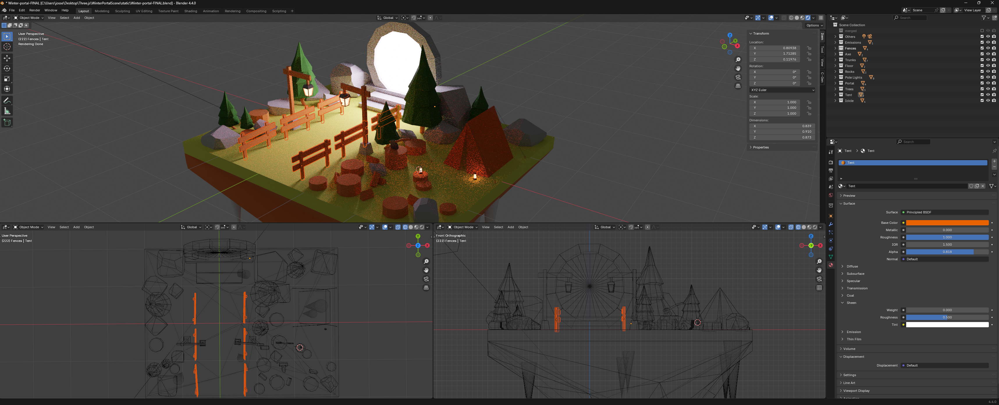
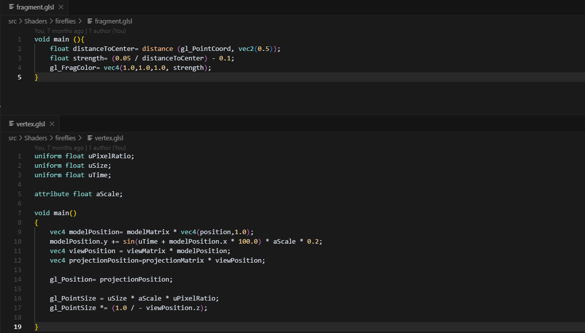
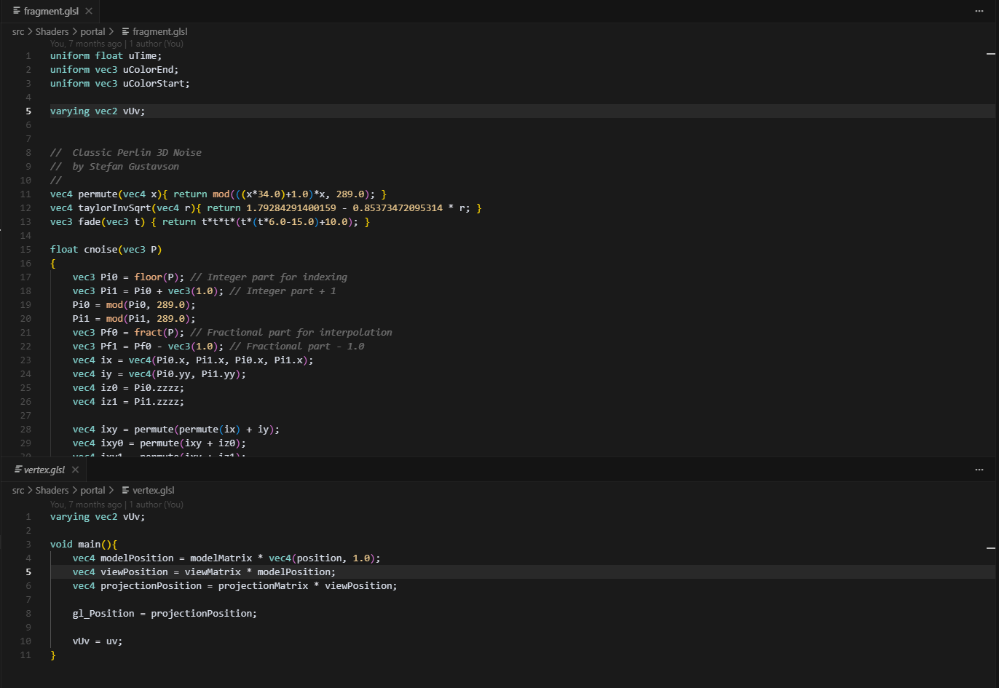
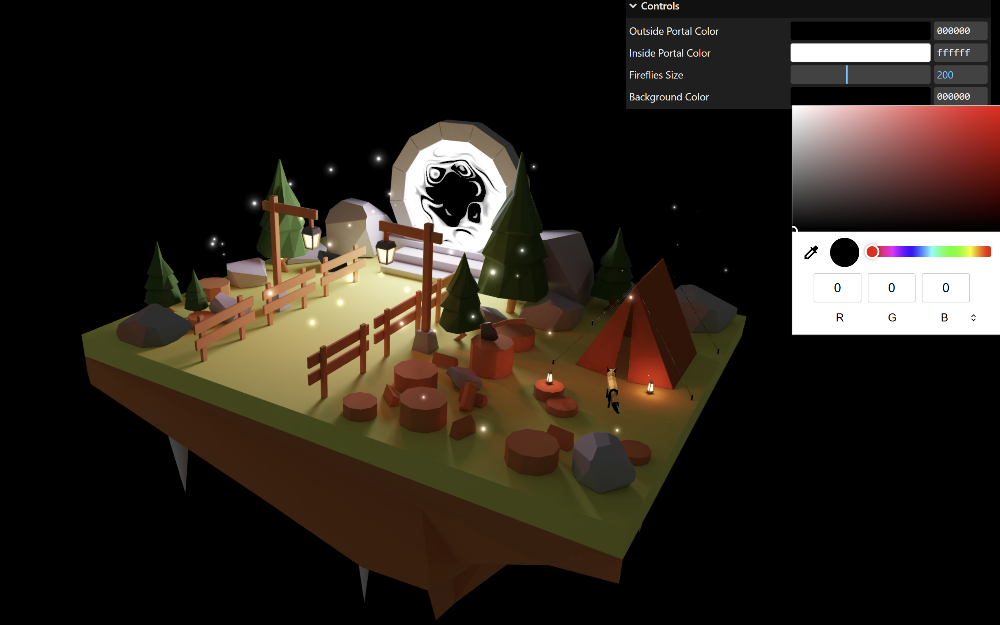

I created this real-time 3D scene as a personal exploration into storytelling through interactive environments. Using Blender for modeling and scene composition, I built a whimsical landscape featuring a glowing portal, a cozy tent, and a mischievous fox on a little adventure. The scene was then brought to life in Three.js, where I used custom GLSL shaders to give the portal a dynamic, playful energy and to scatter flickering fireflies throughout the landscape. This project was a chance to experiment with stylization, animation, and shader effects, while refining my skills in web-based rendering and immersive visual design.
View Final ProductTech Stack
To bring the environment to life, I started by creating and assembling low-poly assets — including the trees, fences, stylized lighting posts, and a circular portal. These assets were carefully arranged to support both visual storytelling and modeling efficiency.
Some clean up was necessary to ensure smooth performance in the browser, so I corrected face orientations, removed hidden or redundant faces, and normalized object scales to ensure consistent transformations in Three.js. I also manually unwrapped all objects into a UV map to prepare the model for export.

Before exporting, I used Blender’s Cycles renderer to bake global illumination and soft shadows into a custom lightmap. Baking is the process of pre-calculating complex lighting and surface effects—such as indirect light, ambient occlusion, and soft shadows—and storing them in 2D textures. These textures are then applied to the geometry in Three.js, allowing the scene to simulate detailed lighting without the need for resource-intensive real-time calculations. Denoising was enabled to reduce sampling artifacts and produce a cleaner result.
I then exported the scene as a compressed .glb file, retaining the visually rich materials and atmosphere while making the model optimized for real-time performance in the browser.

To add more interest to the scene, fireflies were added to the scene using instanced planes scattered around our landscape. Each firefly was animated using a custom shader material that manipulated opacity, scale and position over time. This GPU-driven approach allowed for dozens of fireflies to be animated at minimal performance cost.

To create the animated portal, a custom GLSL shader was applied to the mesh in Three.js. The vertex shader passed UV coordinates to the fragment shader, along with time-based uniforms, to create the swirling gradients effect on the portal surface. The motion effects were controlled by parameters like the uTime, uColorStart, and uColorEnd, allowing for real-time variation and visual interest. The final output was written in sRGB color space to ensure color accuracy across different devices, resulting in a vibrant, dynamic focal point within the scene.

To iterate efficiently and add real-time controls like firefly size, background and portal colors, I integrated lil-gui. Lil-gui is a lightweight JavaScript library that provides a graphical user interface (GUI) for changing the properties of JavaScript objects at runtime. These carefully crafted, shader-powered elements brought a sense of magic and motion to the scene—while remaining optimized for real-time rendering on the web.

View Project on GitHubNote: This project was built using the fantastic lessons from Three.js Journey by Bruno Simon. Huge thanks to Bruno for teaching me the techniques and workflows that made this possible!
Coded with ♥ by Aurélie